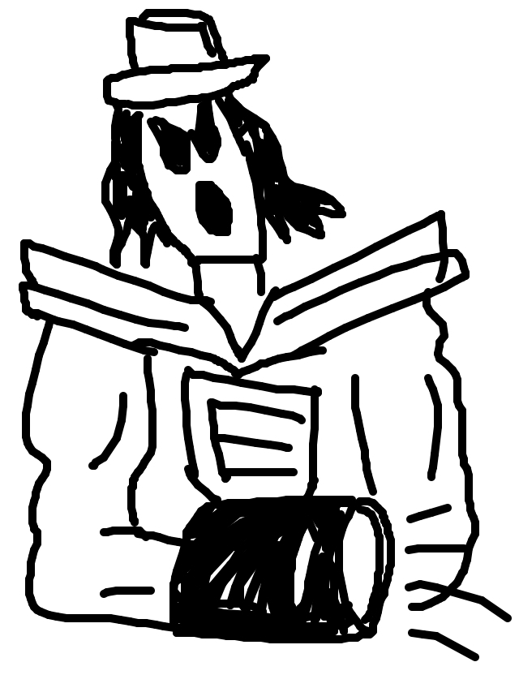
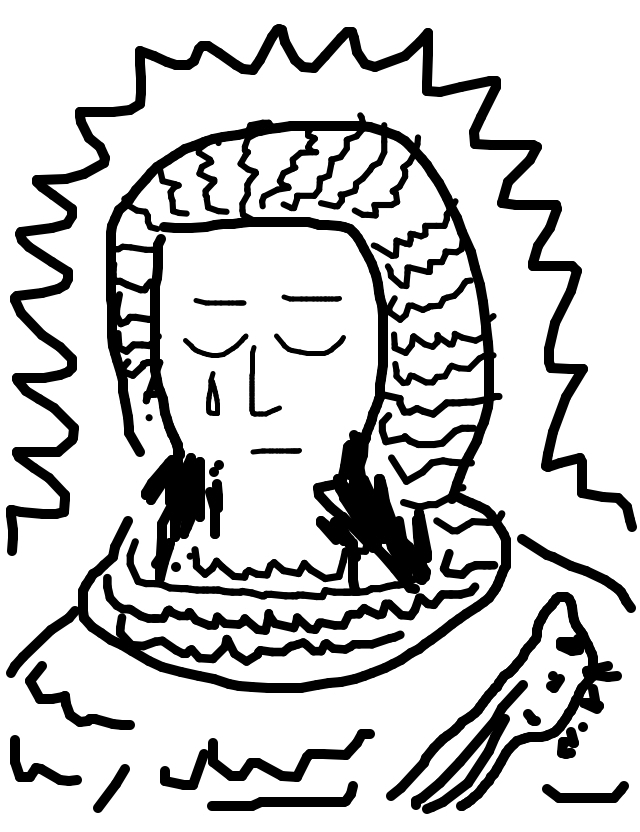
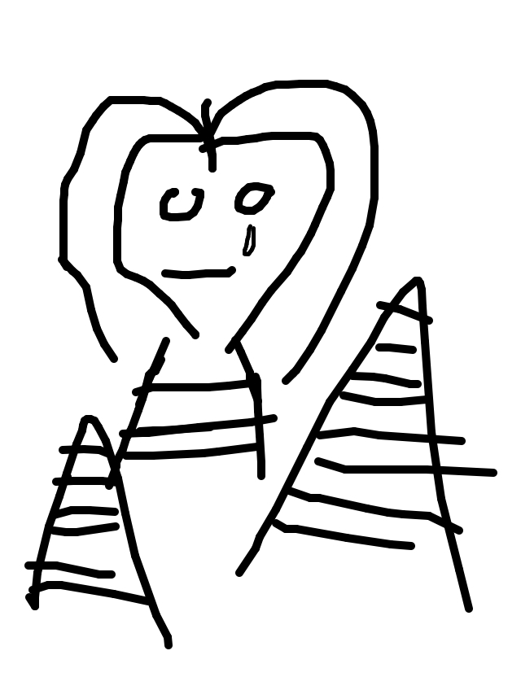

so jason drew...

so jackcheng wrote...
I am Expektor! Bow before me or suffer the wrath of my Expektor-ray-arm-cannon-things.
so matt drew...
so tag wrote...
Jack White, armor-clad, invincible, terribly upset.
so irondavy drew...
so tasia wrote...
And then the sphinx shed one final tear
so mike drew...
so rickyc wrote...
Tasia is upset that Mike bought her yams for her anniversary instead of flowers. She's wondering what she's going to do with these things.